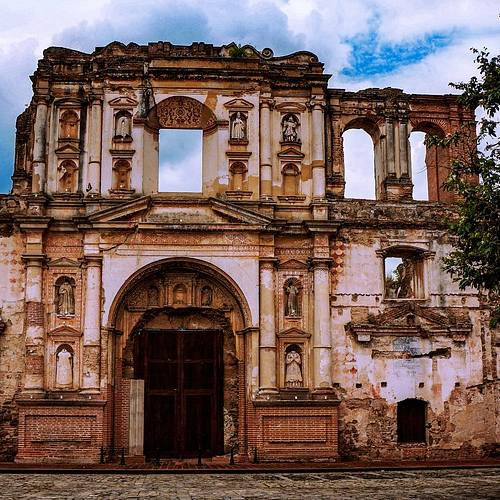
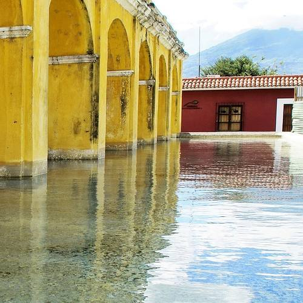
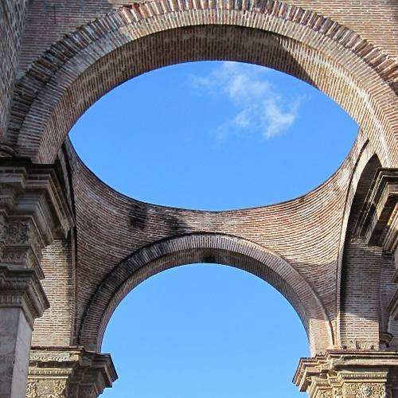
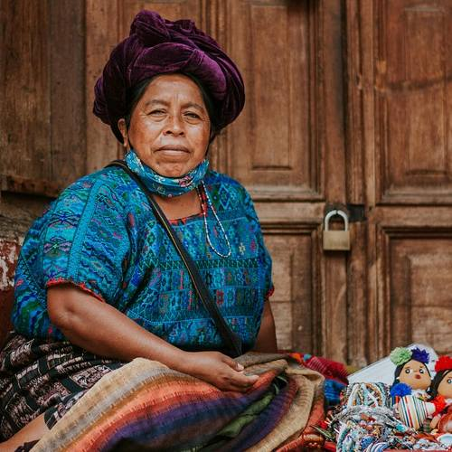
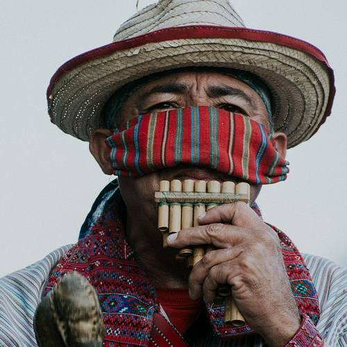
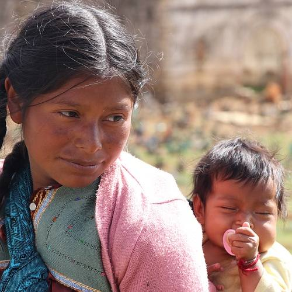
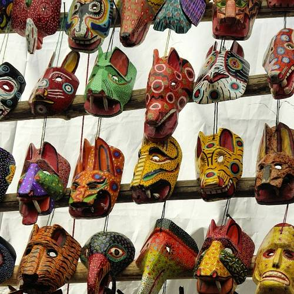
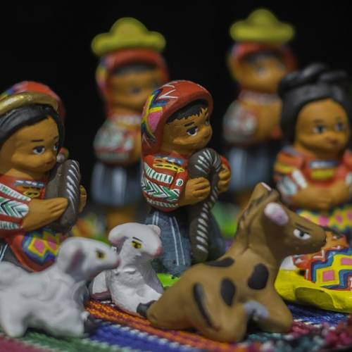
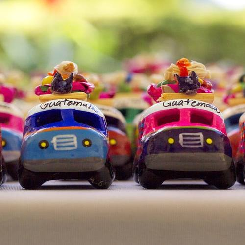
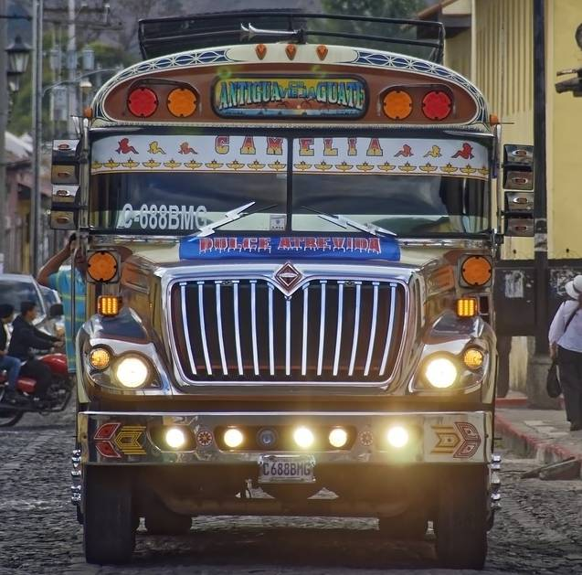

ANTIGUA GUATEMALA
Antigua Guatemala was founded on March 10th, 1543, and was declared
Cultural Heritage in the year of 1979. It
is located approximately 25 kilometers west of the Capital of the Republic
of Guatemala. Considered one of the 20 most important cities in Guatemala.
It is believed that time stoped in this city, and it remained
stuck within the thick walls of its Temples, monasteries and colonial
houses.
This colorful city and its population still keeps its historical
buildings from the XVI century despite earthquakes and bad weather,
and it can be traveled just by walking through its stoned streets.
This city has become one of the most touristic places in Guatemala
due to its historical buildings, the culture and its people. It is
rich in all types of handicrafts such as textiles, ceramics, silver
and gold products, jewerly, metal products, typical sweets and gastronomy.
Architecture
  People
  Handicrafts
  Big Tour through the City!
It's that time of the year again, and we are getting ready
for the big tour through Antigua Guatemala.
This year we will make the tour in 3 days to make sure that
you can take as much time as you need watching the ruins and
learning of the amazing history of Antigua.
There will be a time for taking pictures, and also a time for you
to decide which typical food from Guatemala you want to eat.
Date: July 20 - 23, 2021
Time: 5:00am - 7:00pm
Place: Antigua Guatemala